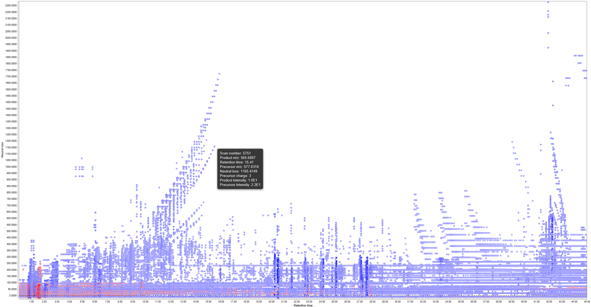
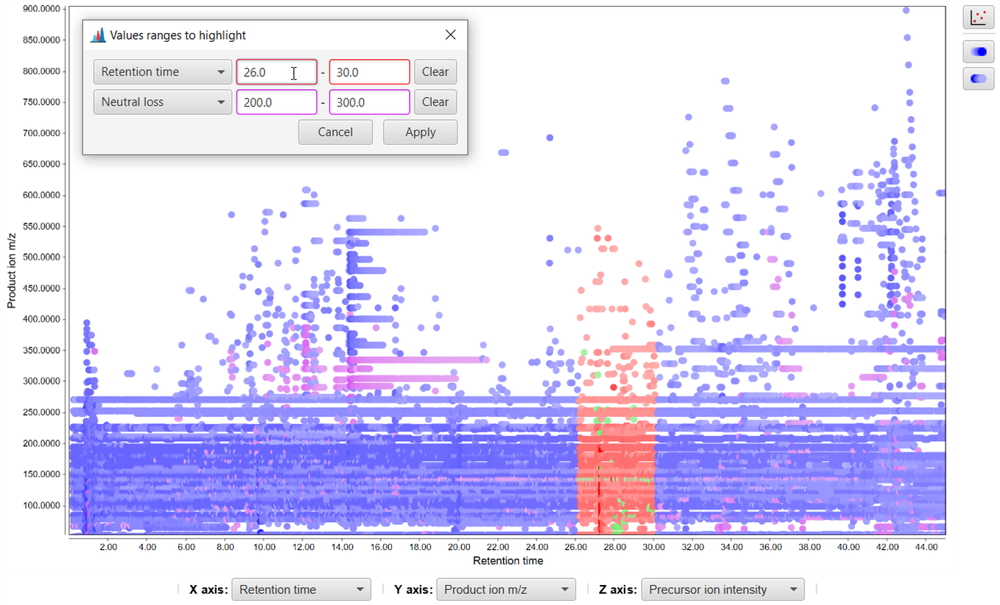
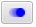
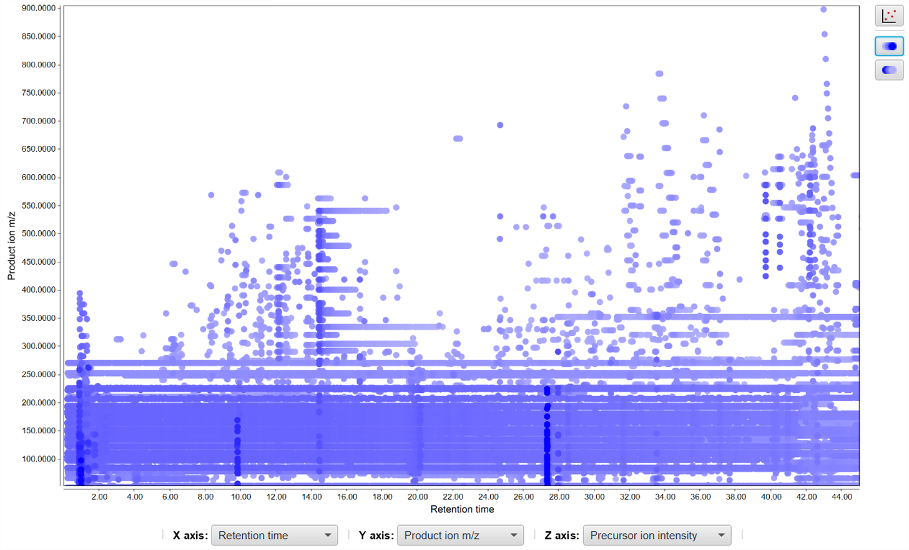
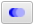
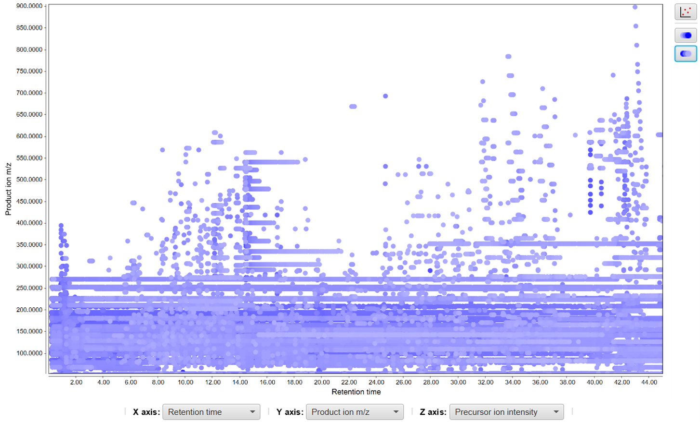

MS/MS visualizer
Description
This tool displays a three-dimensional plot of the MSn data. The are 4 options for X and Y axes:
retention time, precursor ion m/z, product ion m/z, neutral loss and 3 options for Z axis:
precursor ion intensity, product ion intensity, retention time. You can filter ions by
the product intensity and select ions for diagnostic fragmentation filtering in parameters.
Also module enables you to highlight values of interest and sort ions by Z value.
Diagnostic fragmentation filtering
Due to common structural features, compounds within the same class undergo similar MS/MS fragmentation
and as a result of many identical product ions and/or neutral losses.
Diagnostic fragmentation filter (product ion filter) is a post-acquisition approach to screen
LC-MS/MS datasets for entire classes of both known and unknown natural products. This tool searches
all MS/MS spectra for product ions and/or neutral losses that has defined as being diagnostic for
the entire class of compounds. In other words it screens LC-MS/MS datasets for MS/MS spectra
containing production ions and/or neutral losses that are specific to that class of compounds.
The user defines the diagnostic product ions and/or the diagnostic neutral loss values (Da) to
use in the filtering. The user can also define the minimum diagnostic ion intensity (% base peak)
to use in the filtering.If a recurrent neutral loss occurs, a line pattern in the plot can be observed.
If compounds carrying those diagnostic product ions and/or the neutral loss values are detected
the resulting plot will show their product ion m/z and precusor ion m/z. Additionally, an output
file may be specified that will output the results of the filtering.
For a detailed view of diagnostic fragmentation filtering:
Walsh, Jacob P., et al.
"Diagnostic Fragmentation Filtering for the Discovery of New Chaetoglobosins and Cytochalasins."
Rapid Communications in Mass Spectrometry (2018).
This tool is very useful to get an overview of large amounts of MS/MS data.

Parameters
Raw data file
Selection of the raw data file to visualize. Only one file can be selected.
X axis
Selection of the X axis. There are 4 options:
- Retention time
- Precursor ion m/z
- Product ion m/z
- Neutral loss
Y axis
Selection of the Y axis. Options are the same as for X axis.
Z axis
Selection of the Z axis. There are 3 options:
- Precursor ion intensity
- Product ion intensity
- Retention time
MS level
MS level of the scans to be plotted.
Retention time
Retention time range.
m/z range
Range of m/z values for precursor ions in MSn scans.
m/z tolerance
Maximum allowed difference between two m/z values to be considered same.
Intensities filtering
Optional parameter to filter ions by intensity. There are 3 different options:
- Number of best fragments - Number of ions with highest intensities from each scan to be visualized.
For example 5(for each scan 5 ions with highest intensities will be plotted).
- Base peak percent, % - Ions with intensity values lower than given percent of base peak intensity will be plotted.
For example 95(ions with intensity values lower than 0.95 multiplied by base peak intensity will not be plotted).
- Intensity threshold - Ions having intensities lower than given value will not be plotted.
For example 6.0E6(ions with intensity values lower than 6.0E6 will not be plotted).
Diagnostic fragmentation filtering
Optional parameter for diagnostic fragmentation filtering described above. Has 2 subparameters:
diagnostic product ions and diagnostic neutral loss values. Scans not containing any ion
satisfying all input values will not be considered for the visualization.
Functionality
This plot is using the third part library JfreeChart for its basic functionality.
- Drag the mouse from left to right - selecting the area to zoom
- Drag the mouse from right to left - zoom out
- Select combo boxes below - change axes types
- Hold the mouse on data point - show detailed information in a tooltip
- Double click on data point - show spectrum plot
- - highlight ions with specific values given by input
ranges with colors(Note: green color denotes ions satisfying both ranges)

-  - show points with higher Z values in front

-  - show points with lower Z values in front
